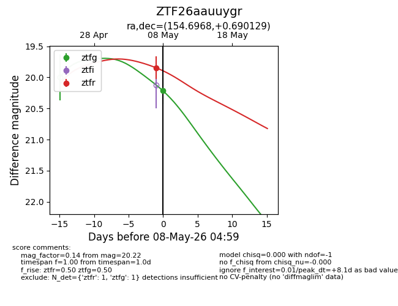
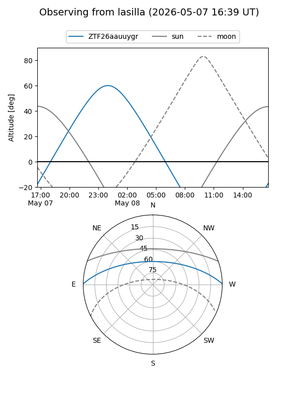
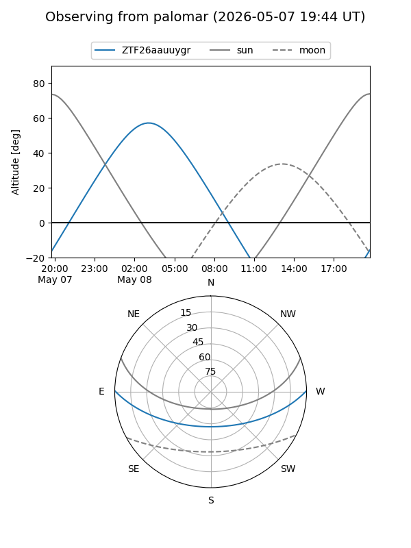
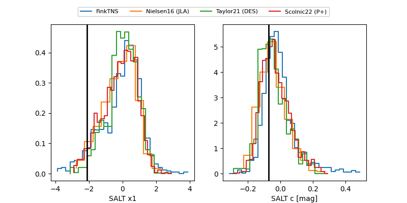

ZTF26aauuygr
Target ZTF26aauuygr at 2026-05-08 05:01
Aliases and brokers:
FINK: link
Lasair: link
ALeRCE: link
alt names
ZTF26aauuygr (ztf,fink_ztf)
Coordinates:
equatorial (ra, dec) = 154.6968,+0.69013
equatorial (HMS+DMS) = 10:18:47.23,+00:41:24.47
galactic (l, b) = (242.3062,+44.84595)
Flags:
Photometry:
last ztfg=20.22, ztfr=19.85
1 ztfg, 1 ztfr detections
Lightcurve

Visibility


Additional plots
